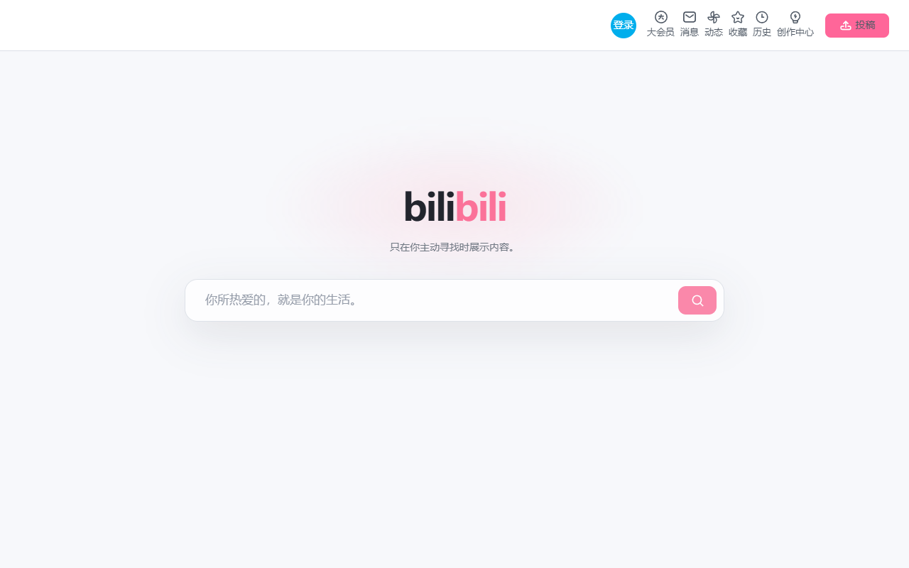
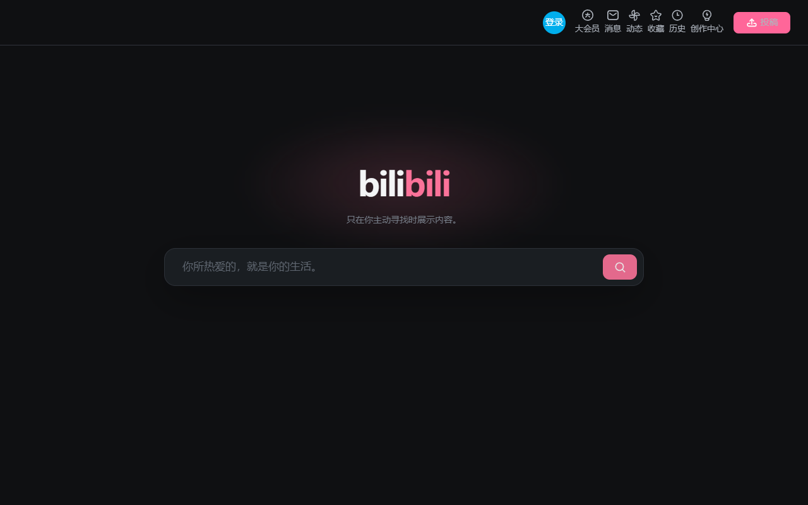

CHROME / EDGE · 非官方扩展
让首页回到搜索。
隐藏 Bilibili 根首页的推荐内容，保留原生搜索、联想和账户入口。想看什么，由你主动决定。
下载 ZIP 后需解压，并在扩展管理页选择“加载已解压的扩展程序”。
保留你需要的，收起其余内容
只作用于根首页
视频、搜索及其他页面继续使用 Bilibili 原有布局。
原生搜索
搜索历史、联想与跳转仍由网站自身处理；热搜区域会隐藏。
明暗模式
自动跟随浏览器配色，并保留原生账户入口。
效果预览

